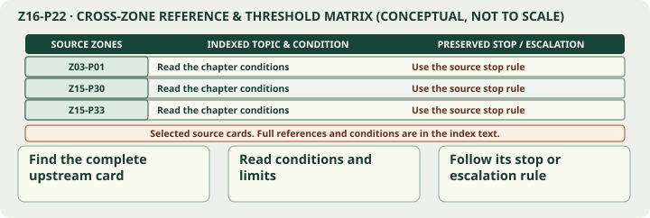

Z16-P22 · Field reference atlas · New manuscript
Wildfire Ready-Set-Go, Burn Bans and Smoke Clean-Room Index
Link Z03 lawful fire prevention and burn bans with Z15 wildfire Ready-Set-Go evacuation and EPA HEPA indoor clean-room guidance.
When it applies · Dry fire-weather seasons, Red Flag Warnings, and regional wildfire smoke plumes.
Equipment · Full offline reader (Z03, Z12, Z15), primary zone cards, and local emergency and agency references.

Actions
- Obey local burn bans, Red Flag Warnings, and mineral-soil, extinguish-cold rules unconditionally (Z03-P01, Z03-P37); switch to no-fire thermal, food plans whenever fire restrictions or peat, duff ground exist (Z03-P42, Z08-P31).[A08, C01, C05, R18]
- Follow local Ready-Set-Go wildfire evacuation notices early (Z15-P29..P31)—evacuate immediately on GO orders rather than waiting for visible flames or gridlocked roads.[A08, D09]
- During regional smoke plumes (Z15-P33), monitor AirNow AQI, run a non-ozone portable HEPA cleaner in a closed interior room, use properly fitted NIOSH N95 respirators outdoors if needed, and relocate to a cooler clean-air center if indoor heat becomes unsafe (Z15-P37).[A08, D10, D20]
Failure recognition · Ignoring Red Flag bans, using ozone air purifiers, or staying inside an uncooled sealed room during compound smoke and heat endangers lungs and life.[C05, D10, D20]
Verify · Burn-ban compliance, Ready-Set-Go triggers, non-ozone HEPA setup, and smoke+heat relocation rules stay harmonized.[C05, D09, D20]
Stop or change course · Stop all open flames during Red Flag Warnings or on peat duff, and evacuate immediately when official wildfire orders issue.[C05, D09]
Evidence and editorial notes
- A08 · U.S. EPA · Reduce Your Smoke Exposure (2026)
- Section: Compound environmental hazard cross-reference · Conditions: Indexing multi-hazard interactions across Z01, Z04, Z10, Z12, Z13, and Z15
Support: Compound emergencies (smoke + heat, outage + subzero cold, flood + well/electrical damage) require checking interacting stop rules across zones.
Limitations: Follow local emergency-management orders when hazards conflict; no static chart covers every site. · Conflicting evidence: None noted.
Editorial note: Preserves A02 compound-hazard findings in Z16. · Specialist reviewer: Emergency management and public-health reviewer
Primary source · checked 2026-11-25 - C01 · Minnesota DNR · Fire Danger and Burning Restrictions (current web edition; verify at use)
- Section: Fire danger and burning restrictions map and links · Conditions: Current Minnesota location, date and jurisdiction
Support: Check current restrictions and local authority requirements before lighting.
Limitations: Restrictions can change daily with humidity, wind, and drought; verify immediately before use. · Conflicting evidence: None; local jurisdiction always supersedes general notes.
Editorial note: Mandatory legal check before any live fire card. · Specialist reviewer: Fire prevention and local land management
Primary source · checked 2026-11-24 - C05 · CPSC · Portable Heaters and Camping Equipment (current web edition)
- Section: Carbon monoxide poisoning from portable camping equipment · Conditions: Tents, campers, vehicles and other enclosed spaces
Support: Fuel-burning camping equipment can lead to fatal carbon monoxide buildup in enclosed spaces.
Limitations: High altitude increases incomplete combustion and CO production. · Conflicting evidence: None; aligns with CDC-CO and NPS guidance.
Editorial note: Hard-stop prohibition against indoor/vestibule/tent combustion. · Specialist reviewer: Carbon monoxide safety and emergency medicine
Primary source · checked 2026-11-24 - D09 · FEMA / Ready.gov · Extreme Heat (current web edition)
- Section: Extreme Heat Waves, Heat Domes, and Power-Outage Cooling Plans · Conditions: Prolonged heat advisories, excessive heat warnings, and grid-strain brownouts
Support: Identify public cooling centers and air-conditioned backup locations ahead of heat waves, check twice daily on older adults/children/chronically ill neighbors, block solar gain through windows, never leave people or pets in parked vehicles, and activate 911 immediately for heat stroke.
Limitations: Electric fans alone do not prevent heat illness when indoor air temperatures climb into extreme heat ranges (above ~95°F) with high humidity. · Conflicting evidence: None; aligns with CDC-HEAT, E08, E19, and T09.
Editorial note: Anchors urban/rural heat-wave resilience and vulnerable-neighbor checks. · Specialist reviewer: Public health and emergency medicine
Primary source · checked 2026-11-24 - D10 · FEMA / Ready.gov · Winter Weather (current web edition)
- Section: Blizzards, Ice Storms, and Multi-Day Freezing Blackouts · Conditions: Blizzard Warnings, Ice Storm Warnings, and extreme wind-chill emergencies
Support: Complete supply, fuel, and medication staging before storm onset, stay off snow/ice-closed roads, prepare safe non-combustion warmth consolidation indoors, keep vents/exits clear of snowdrifts, and evacuate to community warming shelters early if indoor heat fails.
Limitations: Ice storms down overhead power lines and trees simultaneously, delaying utility restoration for days across wide areas. · Conflicting evidence: None; connects Z15 winter disaster response with Z12/Z13.
Editorial note: Grounds winter-storm travel halts and warming-center transitions. · Specialist reviewer: Cold-weather emergency management
Primary source · checked 2026-11-24 - D20 · U.S. EPA · Reduce Your Smoke Exposure (2026)
- Section: Stay indoors and keep cool; seek shelter elsewhere · Conditions: Wildfire smoke combined with indoor heat, cooling failure or power outage
Support: Use a cooler cleaner-air shelter when the dwelling cannot be kept both cool and adequately protected from smoke.
Limitations: No universal ranking of heat and smoke hazards. Follow local evacuation and cooling guidance. · Conflicting evidence: See A02 claim audit for boundaries.
Editorial note: Added in A02 to separate a consequential source boundary. · Specialist reviewer: Public health and emergency management
Primary source · checked 2026-11-25 - R18 · Minnesota DNR · Minnesota Native Plant Communities and Biomes (Current web edition)
- Section: Natural plant fiber harvest limits and conservation ethics · Conditions: Bast fibers, rushes, sedges, and woody stems in regional biomes
Support: Harvesting fibrous plants without landowner permission or in protected native plant communities damages ecosystems and may violate law.
Limitations: Strength of hand-twisted plant cordage varies sharply with retting, moisture, and knots; never assign life-safety loads. · Conflicting evidence: None noted.
Editorial note: Connects Z08 fibers to Z09 load limits and law. · Specialist reviewer: Botanist and materials specialist
Primary source · checked 2026-11-25
Source lineage · New manuscript (Z16 P20 hazard index) · Classification · New manuscript.